Agentes Químicos e Biológicos
Novos saberes e olhares
Elaine Jacob
Fábio Neves
Renan Mendes
Tiago Dias
Bem vindos(as)!
Acesse o conteúdo

https://bit.ly/seg-quim
Parte 2 - Agentes químicos: toxicologia e segurança
Revisão da aula anterior
Agentes químicos - Toxicologia e segurança
Aula 1 (27/set): Contextualização sobre as propriedades químicas e sua relação com a toxicologia e segurança laboratorial
Seção Objetivo específico 1 - Introduzir conceitos de segurança química e toxicologia
2 - Conhecer os diferentes agentes químicos, formas de contaminação, ação no organismo e meios de prevenção e controle.
Conceitos já estudados
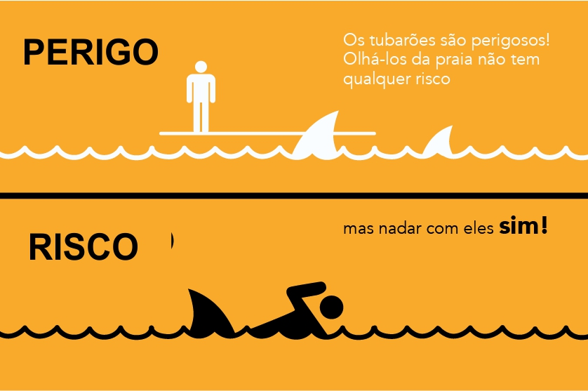
- Perigo x risco
- Perigo: potencial de causar danos (propriedade inerente do agente perigoso)
- Risco: combinação da probabilidade de um evento ocorrer e da sua gravidade
Conceitos já estudados

- Sistema RAMP de gerenciamento de segurança
- Reconhecer os perigos
- Avaliar os riscos
- Minimizar os riscos
- Preparar-se para emergências
Conceitos já estudados
Cultura de segurança
- Cultura Baseada em Regras
- 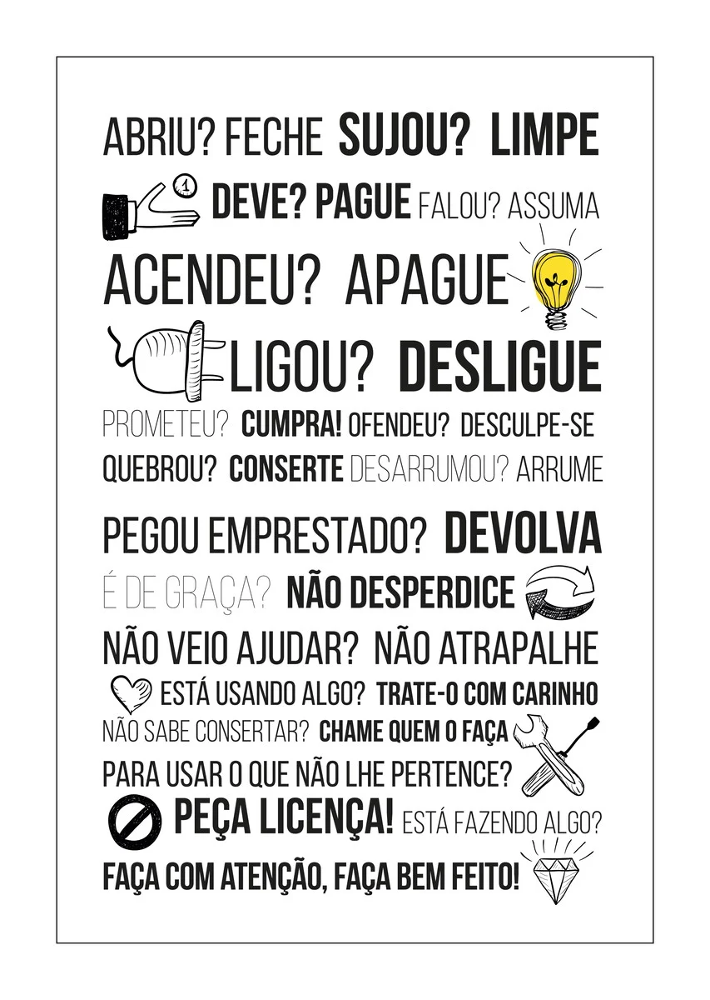
- Cultura Baseada em Riscos
Conceitos já estudados
- Perigos químicos
- Toxicidade
- Inflamabilidade
- Corrosividade
- Reatividade
| 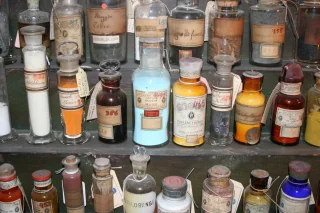 | 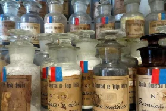 |
Questionamentos a responder
- Como avaliar se um laboratório é perigoso, com base nos produtos manipulados?
- Como é feita a classificação de perigos de um produto químico?
- Como esses perigos devem ser comunicados aos usuários do laboratório?
Objetivo da aula
- 1ª Seção: Compreender a relação entre as propriedades químicas a toxicologia e a segurança laboratorial
- 2ª Seção: Compreender o sistema de comunicação de perigos químicos (GHS)
Propriedades químicas importantes para a toxicologia
Estado físico
Sólido
Líquido
Gás
- Liquidos e gases: podem se dispersar facilmente na atmosfera a partir de uma fonte e contaminar o trabalhador por meio da inalação.
- Sólidos (não sublimáveis) e líquidos não voláteis: são inalados, ao:
- Serem mecanicamente dispersos na forma de pequenas partículas ou
- Produzidos em processos que emitem material particulado no ar ambiente (ex: combustão)
Polaridade
- Uma das propriedades químicas mais importantes: influencia uma série de outras propriedades como:
- volatilidade
- solubilidade
- temperaturas de fusão e ebulição
| 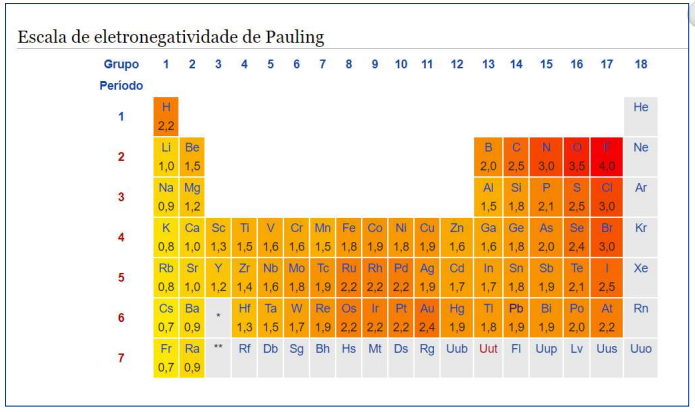 |
| 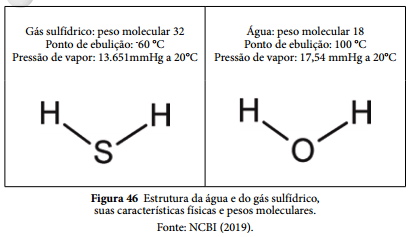 |
Volatilidade
- Avaliada pela temperatura de ebulição e pressão de vapor
Pressão de vapor é a pressão exercida por um vapor quando este está em equilíbrio termodinâmico com o líquido que lhe deu origem
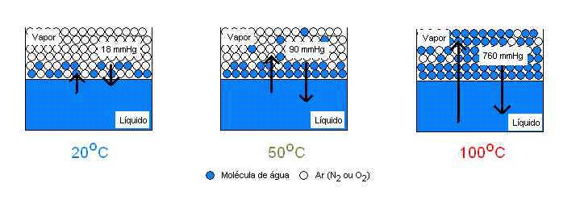- A pressão de vapor é uma medida da tendência de evaporação de um líquido. Quanto maior for a sua pressão de vapor, mais volátil será o líquido, e menor será sua temperatura de ebulição relativamente a outros líquidos com menor pressão de vapor à mesma temperatura de referência.
Volatilidade
Temperatura de ebulição e pressão de vapor de substâncias selecionadas
| Substância | Pressão de vapor (mmHg) | Temperatura de ebulição (ºC) |
|---|---|---|
| Éter etílico | 537 (a 25 ºC) | 34,5 |
| n-Hexano | 150 (a 25 ºC) | 68,7 |
| Benzeno | 95 (a 25 ºC) | 80,1 |
| Tolueno | 28,4 (a 25 ºC) | 110,6 |
| Acetato de butila | 10 (a 20 ºC) | 126 |
| Fenol | 0,351 (a 20 ºC) | 181,8 |
| n-Dodecano | 0,3 (a 20 ºC) | 216 |
Taxa de evaporação - outra forma de avaliar a volatilidade
Outra forma de avaliar a volatilidade de uma substância é comparando-a com a evaporação de um composto padrão, geralmente acetato de butila ou éter etílico.
- O índice é conhecido como taxa de evaporação (evaporation rate), muito utilizado para solventes
Exemplo: taxas de evaporação de algumas substâncias em relação ao padrão (acetato de butila)
| Secagem rápida | Padrão | Evaporação lenta |
|---|---|---|
| Acetona (5,6) Hexano (8,3) Metiletilcetona (3,8) Benzeno (5,1) |
Acetato de butila (1) | Água (0,3) Xileno (0,6) |
Tipo de ligação
| Ligação iônica | Ligação metálica | Ligação covalente |
|---|---|---|
| 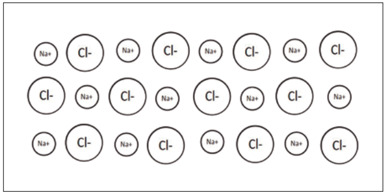 | 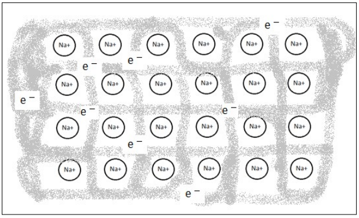 | 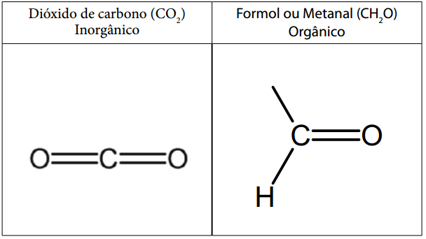 |
Solubilidade
- Expressa a massa da substância que se dissolve em água a uma determinada temperatura
- Exemplos (solubilidade em água a 25 ºC:
- NaCl: 359 g/L
- FeSO4: 256 g/L
- Exemplos (solubilidade em água a 25 ºC:
- Substâncias pouco miscíveis ou imiscíveis em água são chamads hidrófobas
- Uma forma de avaliar a miscibilidade da substância frente a solventes hidrofílicos (água) e lipofílicos (óleo ou gordura) é o coeficiente de partição óleo/água
Solubilidade: Coeficiente de partição
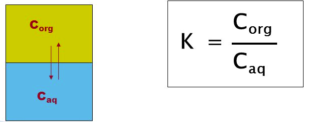- Representa de forma numérica como uma substância líquida se distribui em uma mistura metade óleo e metade água em dadas temperatura e pressão
- Como há vários tipos de “óleo”, utiliza-se como padrão o octanol (álcool) como padrão
- Tem propriedades físico químicas parecidas com os óleos
Solubilidade: Coeficiente de partição
- A variação solubilidade das substâncias é muito grande, então, utiliza-se uma escala logarítmica para facilitar a interpretação (logKow)
- Quanto maior o logKOW, mais solúvel é o composto em óleos e menos em água. O logKOW de zero indica que a substância é distribuída igualmente entre óleo e água e, quando é negativa, indica que é mais solúvel em água do que em óleo.
| Substância | logKow | Interpretação |
|---|---|---|
| Hexano | 3,9 | Cerca de 8 mil vezes mais soluvel no octanol que na água |
| Butanol | 0,88 | Cerca de 7,5 vezes mais solúvel no octanol que na água |
| Acetona | -0,24 | Cerca de 2 vezes mais solúvel na água que no octanol |
Densidade relativa do vapor ou gás
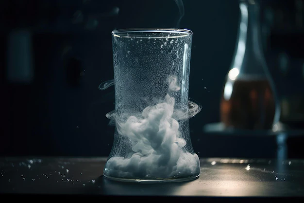
- A densidade do vapor pode ser entendida como o “peso” do vapor de uma substância e é relativa ao ar atmosférico (densidade relativa = 1 a 200ºC)
- Quanto menor a densidade de vapor, mais fácil é a sua dispersão no ar do ambiente de trabalho.
- Elevada densidade de vapor: o vapor tende a permanecer mais próximo da superfície líquida, ou se acumulando próximo ao chão, ou no fundo dos tanques de armazenamento.
Densidades de vapor e estado físico de algumas substâncias a 25ºC
| Produto químico | Densidade do vapor (ar = 1) | Estado físico (25ºC) |
|---|---|---|
| Metano | 0,56 | Gás |
| Etano | 1,04 | Gás |
| Óxido de etileno | 1,49 | Gás |
| Etanol | 1,59 | Líquido volátil |
| Butano | 2,0 | Gás |
| Benzeno | 2,69 | Líquido volátil |
| Naftaleno | 4,4 | Sólido sublimável |
| Tricloroetileno | 4,53 | Líquido volátil |
| Querosene | 5,0 | Mistura líquida volátil |
| Mercúrio metálico | 7,0 | Líquido volátil |
| Iodo | 9,0 | Sólido sublimável |
Reatividade
A reatividade das substâncias químicas é outra propriedade importante para a toxicologia
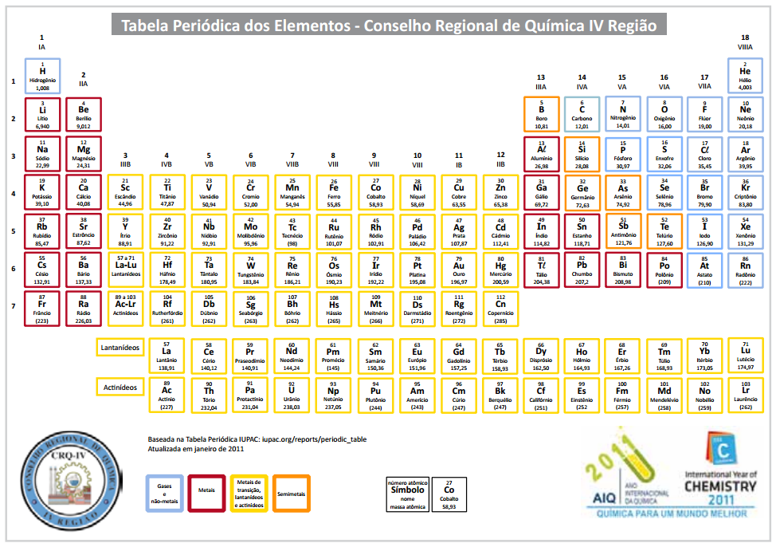Distribuição da reatividade na tabela periódica
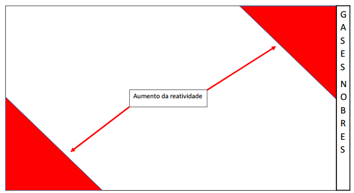
A reatividade da tabela periódica é alta na parte esquerda inferior da tabela, onde estão os metais alcalinos e alcalinos terrosos, em especial o frâncio e o césio, e na parte direita superior da tabela, principalmente onde estão o flúor, o oxigênio e o cloro. Já a baixa reatividade ocorre na coluna 18, onde estão os gases nobres, pouco reativos, e no meio da tabela, composto de elementos também pouco reativos, especialmente na parte inferior onde estão metais nobres, como ouro e platina.
Reatividade de metais e não metais
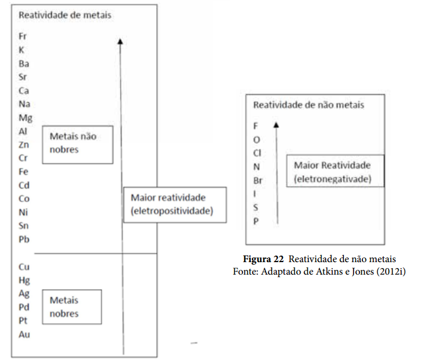Acidez e basicidade

Constantes de acidez e basicidade (pKa e pKb)
- pKa = -log Ka
- pKb = -log Kb
- Quanto maior for o valor de pK mais fraco será o ácido ou a base
Exemplo: dissociação do ácido acético
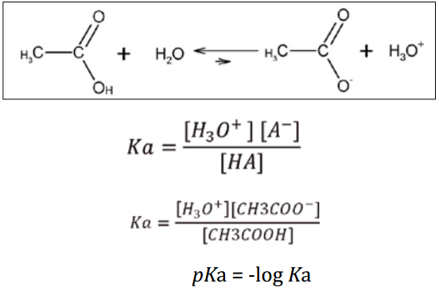Constantes de acidez (pKa)
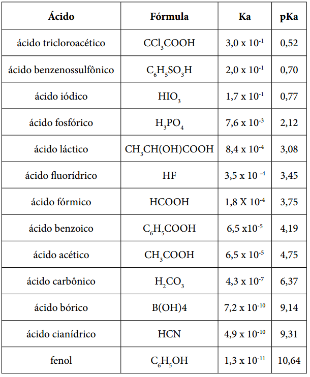Constantes de basicidade (pKb)
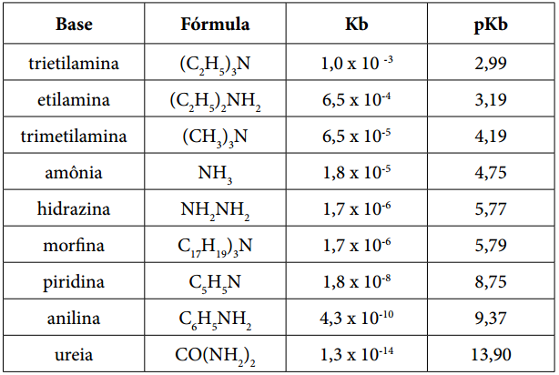Oxidação e redução
- Oxidação: perda de elétrons
- Redução: ganho de elétrons
Principais perigos das substâncias químicas
Perigos físicos
- Incêndio
- Explosão
- Oxidação
Perigos à saúde
- Toxicidade
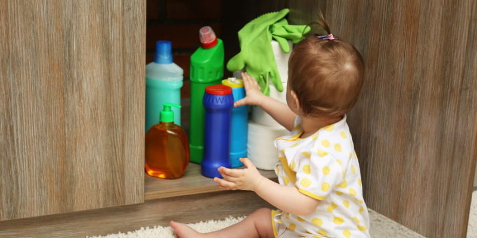
- Lesões de tecidos
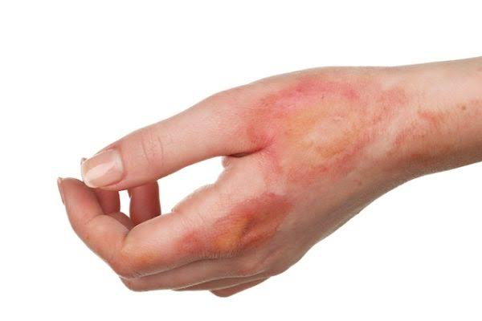
- Sensibilidade respiratória
- Mutações genéticas
Perigos ao meio ambiente
- Perigo ao ambiente aquático
- Perigo à camada de ozônio

DAD/PROPESSOAS/UFG - Set-Out/2023